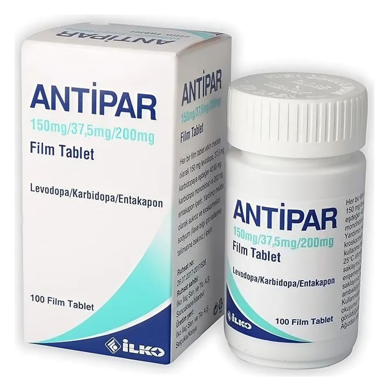

Antipar 150 mg/37,5 mg/200 mg Film Kaplı Tablet, 100 Adet

Ne için kullanılır
KT · Bölüm 1Bir ANTİPAR film kaplı tablette üç etkin madde bulunmaktadır. Her bir film kaplı tablet, etkin madde olarak, Parkinson hastalığının tedavisinde kullanılan levodopa ve levodopanın Parkinson hastalığını tedavi edici etkilerini artıran karbidopa ve entakapon içerir. Bu ilacı kullanmaya başlamadan önce bu KULLANMA TALİMATINI dikkatlice okuyunuz, çünkü sizin için önemli bilgiler içermektedir. Bu kullanma talimatını saklayınız. Daha sonra tekrar okumaya ihtiyaç duyabilirsiniz. Eğer ilave sorularınız olursa, lütfen doktorunuza veya eczacınıza danışınız. Bu ilaç kişisel olarak sizin için reçete edilmiştir, başkalarına vermeyiniz. Bu ilacın kullanımı sırasında doktora veya hastaneye gittiğinizde doktorunuza bu ilacı kullandığınızı söyleyiniz. Bu talimatta yazılanlara aynen uyunuz. İlaç hakkında size önerilen dozun dışında yüksek veya düşük doz kullanmayını z.
ANTİPAR, anti-Parkinson dopaminerjik ilaç olarak adlandırılan bir ilaç sınıfına dahildir. Doktorunuz ANTİPAR’ı size Parkinson hastalığınızı tedavi etmek amacıyla vermiş bulunmaktadır. Parkinson hastalığı, sinir sisteminde meydana gelen bir bozukluktur. Bu hastalık, beyinde üretilen doğal bir madde olan dopaminin eksikliğinden kaynaklanmaktadır. Dopamin, beynin kas hareketlerini kontrol eden kısmında mesajları iletir. Dopamin çok az üretiliyorsa, hareketlerle ilgili sorunlar ortaya çıkar. Levodopa, beyindeki dopamin düzeyini yükselterek etki gösterir. ANTİPAR, Parkinson hastalığında normal günlük işlerin yerine getirilmesini zorlaştıran, el ve ayakların titremesi, vücut katılığı ve hareketlerdeki yavaşlama gibi belirtilerin hafifletilmesine yardımcı olur. Bu durumun tedavisi için size başka ilaçlar da verilebilir. Bu ilacın nasıl etki gösterdiği ya da size neden verildiği konusunda sorularını z varsa lütfen doktorunuza danışınız.